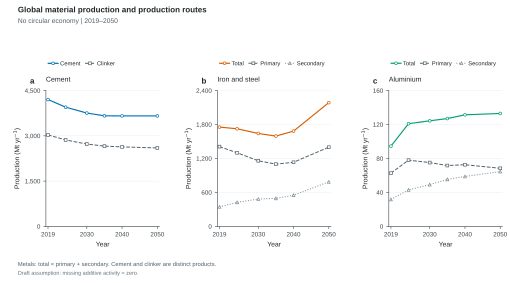
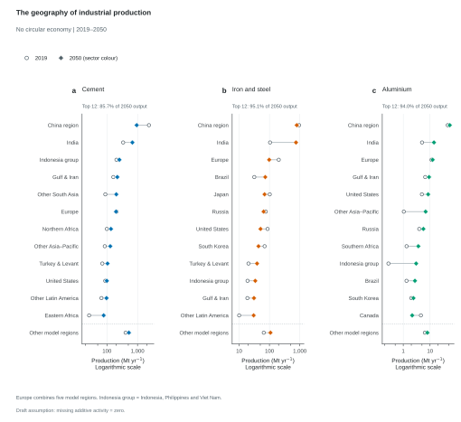
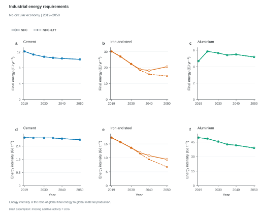
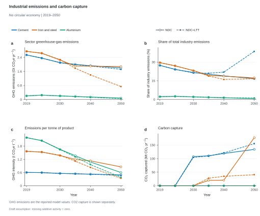
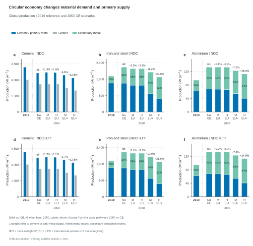
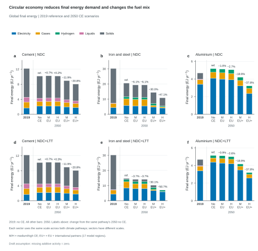
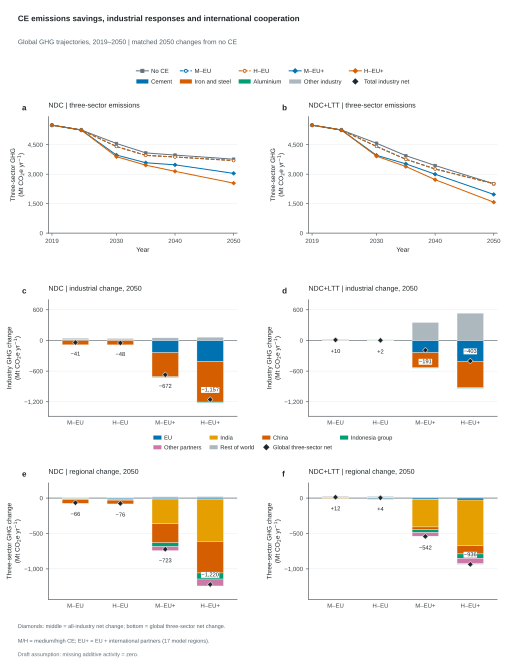
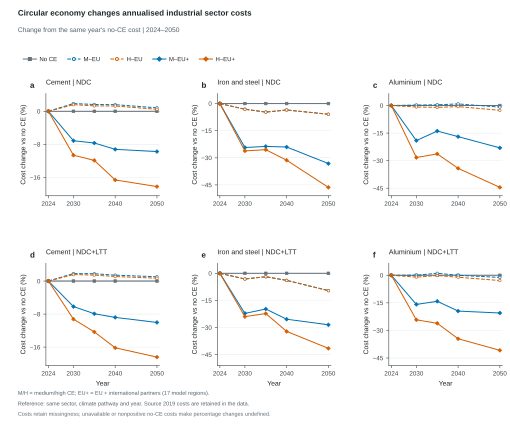

How do global material output and production routes evolve?

Global material production without circular-economy measures, shown in one row with cement and clinker (a), iron and steel (b), and aluminium (c). Cement and clinker are distinct products and are not added. Steel and aluminium totals equal primary plus secondary production. The figure selects ndc_noce once from results_allCE_261008.csv, with no averaging or duplication of climate pathways. The selected scenario remains explicit in the source CSV. Each global value sums the 28 configured model regions once, using exact production parents and Mt/yr units. Each sector has its own vertical scale. Markers show supplied model years joined by straight segments without smoothing or extrapolation. Draft assumption: missing additive activity = zero. No uncertainty estimates were supplied.
Figure 2
The geography of industrial production
Where is production concentrated, and how does it change between 2019 and 2050?

Production in 2019 and 2050 in the 12 largest producer groups, selected and ordered separately for each sector by 2050 production in the raw source scenario ndc_noce. Both endpoints use that same scenario and the same selected producer cohort. Each group has one horizontal connector joining an open 2019 circle to a filled sector-coloured 2050 diamond. Connectors indicate endpoint changes, rather than intervening trajectories. Panels show cement output (a), total primary-plus-secondary steel output (b), and total primary-plus-secondary aluminium output (c). Other model regions is the unranked sum of all groups outside the selected cohort, retaining complete global accounting. Panel annotations give the selected groups' share of global 2050 sector production. Europe combines ENE, ENW, EUE, EUM and EUW. China region denotes CHN; Indonesia group includes Indonesia, Philippines and Viet Nam. Exact model-region memberships are retained in the source data. Values are extracted directly from results_allCE_261008.csv using exact production variable and Mt/yr selections; the original scenario identifier, source variables, source regions and ranking reference are recorded with every observation. Sectors have different horizontal ranges. Logarithmic axes compare production magnitudes. Draft assumption: missing additive activity = zero.
Figure 3
Industrial energy requirements
How do global final energy and energy per tonne evolve under NDC and NDC+LTT?

Global final energy (a–c) and derived energy intensity (d–f) without circular-economy measures under NDC (ndc_noce; solid lines with open circles) and NDC+LTT (baseline_noce; dashed lines with filled squares). Columns show cement, iron and steel, and aluminium; colours identify sectors consistently across the two climate pathways. Values are extracted directly from results_allCE_261008.csv, summing each of the 28 configured model regions once. Final energy sums the exact Electricity, Gases, Liquids and Solids parent variables in EJ/yr, with Hydrogen also included for steel and aluminium. Nested carrier subcategories are excluded to avoid double counting. Derived intensity is global final energy divided by global production, multiplied by 1000 to convert EJ/Mt to GJ/t; it is a ratio of global totals rather than an average of regional intensities or the separately reported source intensity series. Cement uses cement output excluding clinker; steel and aluminium use primary plus secondary production. The source data records the energy numerator, production denominator, conversion factor, original variables and constituent model regions for audit. Each panel has its own vertical scale spanning both pathways. Markers show the supplied model years and straight lines join those values without smoothing, extrapolation or displacement. Curves may overlap where source values coincide or are very close; a filled square within an open circle denotes coincident pathway observations. A nonpositive production denominator yields an undefined intensity. Draft assumption: missing additive activity = zero.
Figure 4
Industrial emissions and carbon capture
How do industrial emissions, emissions intensity and carbon capture differ under NDC and NDC+LTT?

Global sector greenhouse-gas emissions (a), shares of all-industry greenhouse-gas emissions (b), derived emissions per tonne of material (c), and carbon capture (d) without circular-economy measures. Each panel contains cement, iron and steel, and aluminium under NDC (ndc_noce; solid lines with open circles) and NDC+LTT (baseline_noce; dashed lines with filled squares). Colours identify sectors; line and marker styles identify climate pathways consistently with the energy figure. Values are extracted directly from results_allCE_261008.csv using exact variable and unit selections, summing the 28 model regions once. Panel a converts reported sector GHG from MtCO2e/yr to GtCO2e/yr. These reported emissions are not reduced again by the separately reported capture values. Panel b divides each sector's global GHG emissions by Emissions|GHG|Industry and multiplies by 100; the three plotted sectors do not exhaust total industry. Panel c divides global sector GHG in MtCO2e/yr by global production in Mt/yr, giving tCO2e/t. It is a ratio of global totals rather than an average of regional intensities. Cement uses cement output excluding clinker; steel and aluminium use primary plus secondary output. A nonpositive denominator yields an undefined ratio. Panel d uses Carbon Capture|Industry|sector in MtCO2/yr, a distinct CO2 quantity from the CO2-equivalent GHG measure. Source data includes original variables, constituent regions, numerators, denominators and conversion factors for audit. Each panel's vertical scale spans both pathways and all three sectors. Markers show supplied years joined by straight lines, without smoothing or displacement. Curves and markers can overlap where source values coincide or are very close; a filled square within an open circle represents overlapping pathway observations. Very small aluminium capture values lie close to zero on the common capture scale. Draft assumption: missing additive activity = zero.
Figure 5
Circular economy changes material demand and primary supply
How do circular-economy settings change material production relative to no CE and the historical reference?

Global production in 2019 without CE, followed by five 2050 CE settings. The upper row shows NDC (ndc_* scenarios) and the lower row NDC+LTT (baseline_* scenarios). The historical 2019 observation comes from each pathway's no-CE scenario; it is separated visually from the 2050 policy bars. The future bars are ordered no CE, medium CE in the EU, high CE in the EU, medium CE in the EU plus international partners, and high CE in the EU plus partners. EU+ indicates these 17 participating model regions rather than global CE adoption. Cement and clinker are distinct products shown side by side and never added. Steel and aluminium bars stack primary and secondary output; their totals are the sum of the two routes. Labels within sufficiently large metal segments give the secondary-production share, including the historical reference. Future labels above bars give the percentage change in cement or total metal production from no CE under the same climate pathway in 2050, using 100 × (scenario production / reference production − 1); ref. identifies the no-CE reference. No percentage change is assigned to the historical bar. Each sector uses the same vertical limits across rows, including all historical and future values. Production is extracted directly from results_allCE_261008.csv using exact variable and Mt/yr selections and summing each of the 28 model regions once. Source variables, source regions, reference scenario and year, and the numerator, denominator, conversion factor and offset for each annotation are retained in the source data. An unavailable value is not plotted, and a nonpositive reference denominator yields an undefined percentage. Draft assumption: missing additive activity = zero.
Figure 6
Circular economy reduces final energy demand and changes the fuel mix
How do circular-economy settings change global industrial energy demand and its carrier composition?

Global final energy in 2019 without CE, followed by five 2050 CE settings. The upper row shows NDC (ndc_* scenarios) and the lower row NDC+LTT (baseline_* scenarios). Each pathway's 2019 no-CE observation is separated visually from its 2050 policy bars. Future bars are ordered no CE, medium CE in the EU, high CE in the EU, medium CE in the EU plus international partners, and high CE in the EU plus partners. EU+ indicates these 17 participating model regions rather than global CE adoption; all plotted quantities are global. Stacks show Electricity, Gases, Hydrogen, Liquids and Solids in a consistent order and palette. Cement includes its four reported parent carriers; steel and aluminium also include Hydrogen. Final energy is calculated from the exact Final Energy|Industry|sector|carrier parent variables in EJ/yr; nested carrier subcategories are excluded to avoid double counting. Values are extracted directly from results_allCE_261008.csv, summing each of the 28 model regions once. Each sector has the same vertical limits across pathways, including its historical reference, while sectors have different scales. Future labels give the change in total sector energy relative to no CE under the same climate pathway in 2050: 100 × (scenario final energy / reference final energy − 1). Ref. marks the future no-CE reference; no change label is assigned to the historical bar. Source data retains exact carrier variables, constituent regions, scenario and year references, and calculation numerators, denominators, conversion factors and offsets. Missing components propagate through the stack and its total; an incomplete or nonpositive reference yields an undefined percentage. Draft assumption: missing additive activity = zero.
Figure 7
CE emissions savings, industrial responses and international cooperation
How do CE emissions savings translate into wider industrial change, and where do those savings occur?

CE-related global emissions trajectories and signed industrial/geographic changes with NDC in the left column and NDC+LTT in the right. (a,b) Sum of reported GHG emissions in cement, iron and steel, and aluminium for all five CE settings; markers show the supplied model years joined by straight segments. (c,d) Changes in 2050 from no CE under the same climate pathway, decomposed into the three sectors and Other industry. Other industry is reported all-industry GHG minus the three plotted sectors and is an accounting residual. Black diamonds and signed labels show the net change in all-industry emissions, including that residual. (e,f) Changes in the three sectors' 2050 GHG emissions by disjoint regional groups; diamonds and signed labels show the global three-sector net, rather than the all-industry net used in the middle row. Increases and decreases stack independently from zero in both decomposition rows. The same vertical limits are used within each row across pathways. EU comprises EUE, EUM and EUW. The fixed leading partner groups are India, China and Indonesia group, selected once by mean absolute 2050 three-sector emissions change across the eight CE cases (four CE variants and two climate pathways), each relative to its own no-CE reference. Their ranking, names and colours are reused in both regional panels. Indonesia group represents Indonesia, Philippines and Viet Nam. Other partners combines the 11 partner model regions outside that three-group cohort; Rest of world combines the 11 model regions outside EU plus partners. EU, the three selected partner groups, Other partners and Rest of world partition all 28 model regions once. EU+ denotes CE adoption in the EU plus international partners, covering 17 model regions rather than worldwide adoption. Every change is the scenario value minus the matching no-CE value at the same year, retaining the original signs. Reported GHG is not reduced again by carbon capture. All quantities are extracted directly from results_allCE_261008.csv using exact GHG variable and MtCO2e/yr selections. Source data retains constituent regions, variables and coefficients, scenario/reference values, and reference scenario and year. Draft assumption: missing additive activity = zero.
How do circular-economy settings change annualised costs within each industrial sector?

Annualised sector-cost changes across five CE settings in 2024–2050, with NDC in the upper row and NDC+LTT in the lower row. Columns show cement, iron and steel, and aluminium. Each curve gives 100 × (scenario cost − no-CE cost) / no-CE cost, using the same sector, climate pathway and model year for the reference. No CE is therefore zero wherever its reference cost is finite and positive. The same policy colours, markers and line styles are used as in the emissions-response figure. EU+ denotes CE adoption in the EU plus international partners, covering 17 model regions rather than global adoption. Values are extracted directly from results_allCE_261008.csv through exact Total Annualised Cost|Industry|sector parent variables in Millions USD_2010/yr, summing the 28 configured model regions once. These are annualised sector costs in constant 2010 USD. Cost inputs always retain missingness, independently of the additive-activity policy. Incomplete global costs or nonpositive no-CE reference costs give undefined percentages and gaps; finite negative scenario costs and percentage changes are retained. Source data contains all supplied years, with observations before the main plot period retained as context. Original cost variables, constituent model regions, scenario and reference costs, reference scenario and year, numerators, denominators, conversion factors and offsets are recorded for audit. Vertical limits are identical within each sector across the two climate pathways, include zero and all finite changes, and differ across sectors. Markers show supplied model years joined by straight segments without smoothing, extrapolation or displacement.